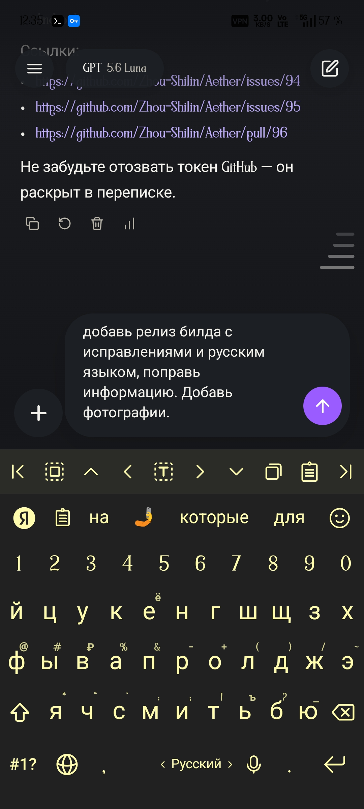
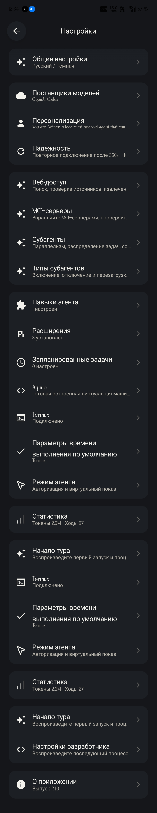

Агент, а не чат-бот
bash, чтение и правка файлов, grep, find, установка пакетов в Alpine proot или в вашем Termux. Опасные действия — только с подтверждением.
Не чат-обёртка. Модель запускает команды, читает и правит файлы, держит локальную среду Alpine и подключает MCP-серверы. Всё на устройстве, без аккаунта и без бэкенда.
Всё, что нужно агенту, чтобы работать руками: терминал, файлы, расширения и любая модель.
bash, чтение и правка файлов, grep, find, установка пакетов в Alpine proot или в вашем Termux. Опасные действия — только с подтверждением.
OpenAI-совместимый API, Anthropic, Gemini или локальная Ollama со своего компьютера: адрес, ключ, заголовки — всё настраивается.
MCP-серверы по stdio, суб-агенты для параллельных задач, навыки и расширения — подключаются в настройках, без пересборки приложения.
Виртуальный дисплей и операции с другими приложениями через Shizuku — без root, но и без службы доступности и чтения чужого экрана.
Стриминг ответа, markdown с колаутами и встроенными графиками, опросы с полем ввода, озвучка ответов, анимированный аватар агента.
История чатов, файлы и ключи остаются на устройстве. Наружу уходит только запрос к выбранной вами модели.
Чат, карточки инструментов со временем выполнения, настройки на русском.


Больше всего времени уходит на получение ключа у провайдера модели.
Скачать Aether-v2.4.1.apk из релизов, разрешить установку из этого источника, открыть файл.
Указать адрес API, ключ и имя модели. Для локальной — адрес Ollama или LM Studio в домашней сети.
Например: «посмотри, почему падает сборка». Агент сам вызовет нужные инструменты и покажет каждый шаг.
Подписанный APK, без аккаунта и без Google Play. Приложение само проверяет новые релизы и ставит их поверх, сохраняя чаты и настройки.
versionCode растёт монотонно. Сборки из форков и с других сайтов — не наши: подпись отличается, обновиться поверх не получится.
Исходный код открыт: интерфейс на Kotlin и Jetpack Compose, агентный цикл в отдельном процессе, инструменты и расширения подключаются по JSON-RPC. Сборки собираются в GitHub Actions из этого репозитория.
Инструкции, расширения, навыки и страницы под конкретные сценарии.